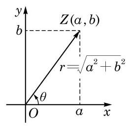
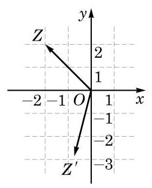

例题 1
例 1 分别写出下列复数的模 与辐角主值 ,并把这些复数用三角形式表示:
(1) ；
(2)-1+i;
(3)-1；
(4) .
学生阅读版 / 沪教版高中数学
必修第二册
第9章复数 · 保留教材主线与原题
教材与正式教参整合
本章第 1 节讲了用复数的代数形式所表达的复数运算公式. 这时, 复数的加减运算公式比较简洁. 但是, 复数的乘除, 特别是复数的除法, 相应的公式比较复杂, 计算比较繁琐. 本节将介绍复数的另外一种表示形式——三角形式，在这种形式下，复数的乘除有比较简洁的计算公式, 相应运算的意义也会更明显地表现出来.

图 9-4-1
因为一个角的终边绕原点 旋转 仍回到原来的位置,所以任意一个非零复数 的辐角都有无穷多个,其任意两个辐角的大小的差一定是 的整数倍. 例如,虚数单位 的辐角可以是任何 .
规定:复数 0 的辐角的大小是任意的值.
两个非零复数相等，当且仅当它们的模与辐角主值分别相等.
复数的任意一个辐角 与复数的模 一起, 就完全确定了复数 . 事实上,如图9-4-1,我们有
于是
例 1 分别写出下列复数的模 与辐角主值 ,并把这些复数用三角形式表示:
(1) ；
(2)-1+i;
(3)-1；
(4) .
例 2 把下列复数用三角形式表示:
(1) ;
(2) .
(1)3π(cos 0.5+i sin 0.5)； (2) ；
(3) ； (4) ；
(5) ； (6) .
(1) 3; (2)-2i;
(3) ； (4)-1+ .
现在我们讨论三角形式下的复数乘除运算公式.
设有两个用三角形式表示的复数 与 ,其中 ,则
Q
棣莫弗 (A. De Moivre, 1667-1754), 法国数学家.
也就是说，两个复数相乘，其积的模等于模的积，积的辐角等于辐角的和；两个复数相除(除数不为零)，其商的模等于模的商, 商的辐角等于辐角的差.
乘积公式得证.
现在设 (从而 ),用乘积公式计算复数 与 的乘积,就得到
再把等式两边同除以 ,就得到所求的除法公式.
例 3 计算, 并用复数的代数形式表示计算结果:
(1) ；
(2) .
例 4 如图 9-4-3,设复数 在复平面上所对应的向量是 ,将 绕原点 逆时针旋转 得到向量 . 求向量 所对应的复数. (结果用复数的代数形式表示)

图 9-4-3
复数的 次幂 ( 是正整数) 是 个相同复数的连乘,因此, 根据复数乘法公式,一个复数的 次幂的模是底数模的 次幂, 而其辐角是底数辐角的 倍.
作为乘方的逆运算,自然会想到,一个复数开 次方,方根的模是被开方数模的 次方根,而方根的辐角是被开方数辐角的 分之一. 这个规则原则上没错,但要注意的是: 由于被开方数不同辐角的 分之一所得出的辐角可能有不同的主值, 在这个过程中被开方数的辐角不能只取主值. 事实上,如果 是被开方数的辐角之一,以下 个值都可以作为被开方数 次方根的辐角:
这 个值之间的差都不是 的整数倍,它们都给出了不同的 次方根; 而其余可能的辐角 都与上述辐角之一相差 的整数倍,它们不会再给出更多不同的 次方根了.
现在可把复数的乘方与开方的公式总结如下:
设 ,则对任何正整数 ,有
的 次方根为
例 5 计算 .
例 6 求 1 的三次方根.
(1) ;
(2) ;
(3) .
(1)4-4i; (2) ；
(3) ; (4) .
(1) ;
(2) ; (3) ;
(4) ； (5) .
(1) ;
(2) .